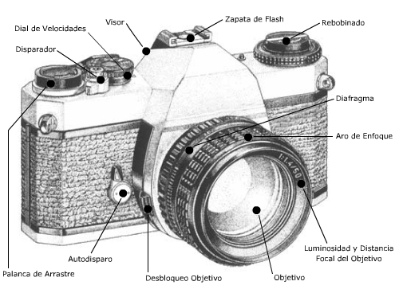
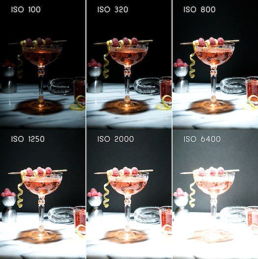
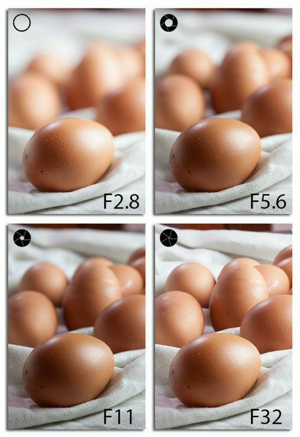
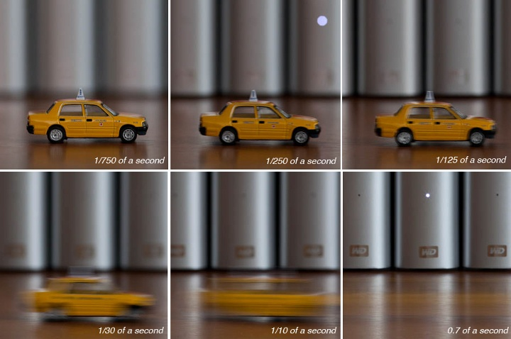
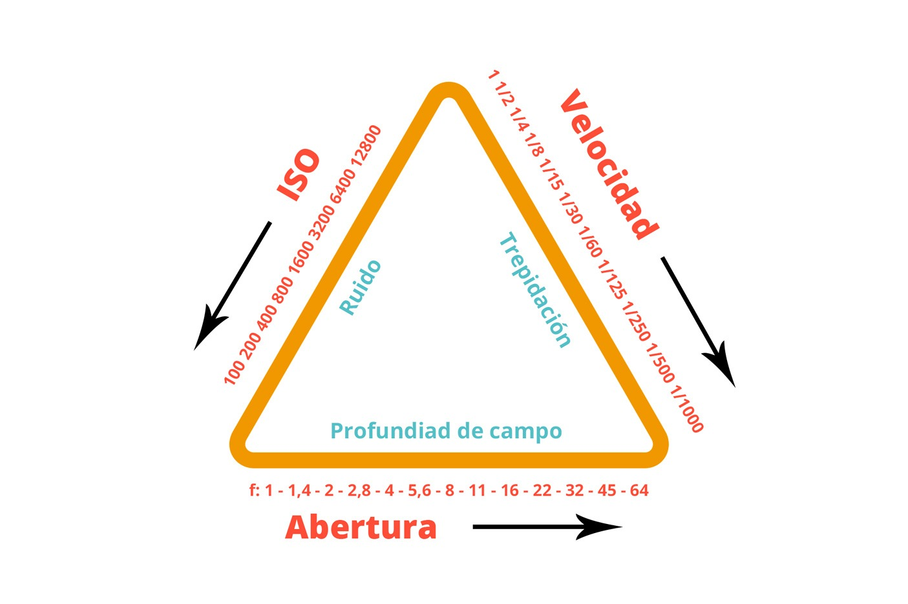

Cómo usar una reflex

Para sacar una foto con una cámara analógica réflex, hay varios conceptos clave que debes comprender
y ajustar según las
condiciones de luz y el efecto que quieras lograr. Los tres ajustes principales son el ISO, la
apertura del diafragma y
la velocidad de obturación. Aquí te explico cada uno:
ISO (Sensibilidad del film)
El ISO determina la sensibilidad del film a la luz. Los números más bajos (como ISO 100 o 200) son
para situaciones con
mucha luz, y los números más altos (como ISO 800 o 1600) son para condiciones de poca luz.
ISO bajo (100-200): Resulta en menos grano o ruido y más detalle, ideal para luz brillante, como en
exteriores durante
el día.
ISO alto (800 o más): Tiene más grano, pero es mejor para situaciones con poca luz, como en
interiores o de noche.
Nota: El ISO se configura según el tipo de película que estés usando. Una vez cargada la película en
la cámara, no
puedes cambiar el ISO, por lo que es importante elegir la película adecuada para las condiciones de
luz en las que vas a
fotografiar.

Apertura del diafragma (f-stop)
La apertura controla cuánta luz entra a través del objetivo. Se mide en f-stops (como f/2.8, f/5.6,
f/11).
Apertura grande (número f bajo como f/1.8 o f/2.8): Permite que entre más luz y es ideal para
condiciones con poca luz.
También produce un fondo borroso (bokeh), lo que es útil para retratos.
Apertura pequeña (número f alto como f/16 o f/22): Deja entrar menos luz, ideal para escenas
brillantes o para lograr
una gran profundidad de campo (donde tanto el primer plano como el fondo están enfocados).
Consejo: Cuanto menor sea el número f (más grande sea la apertura), más luz entra y mayor es la
capacidad de desenfocar
el fondo.

Velocidad de obturación
La velocidad de obturación determina cuánto tiempo el obturador de la cámara permanece abierto para
exponer el film a la
luz. Se mide en segundos o fracciones de segundo (como 1/1000, 1/500, 1/60, o 1 segundo).
Velocidades altas (1/500, 1/1000): Permiten capturar movimientos rápidos con precisión, como un sujeto
en movimiento
(ideal para deportes).
Velocidades bajas (1/30, 1 segundo): Dejan pasar más luz y son mejores para situaciones de poca luz
o para efectos de
movimiento, como el agua corriendo, pero pueden causar desenfoque si no se usa un trípode.
Consejo: Si no tienes un trípode y estás usando una velocidad de obturación baja (como 1/30 o más
baja), trata de
mantener la cámara muy estable para evitar el desenfoque.

La exposición
La clave está en equilibrar estos tres factores (ISO, apertura y velocidad de
obturación) para obtener
una exposición correcta. Si alguno de estos ajustes no está en equilibrio, la foto puede estar
sobreexpuesta (demasiada
luz) o subexpuesta (muy oscura).
Triángulo de exposición

Medidor de exposición (fotometro)
La mayoría de las cámaras réflex analógicas tienen un medidor de exposición que te indica si tu
configuración actual es
adecuada. El medidor generalmente tiene una aguja que se mueve según la exposición: si está
centrada, significa que la
exposición es correcta. Si está hacia un lado, necesitarás ajustar los valores de ISO, apertura o
velocidad.